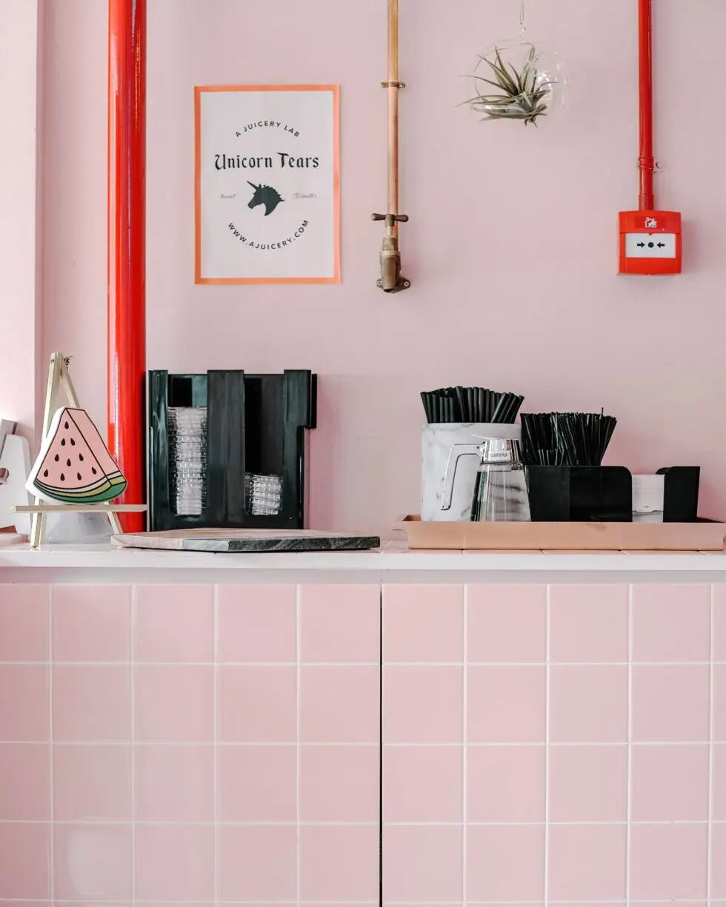

by Emily | Aug 18, 2021 | Kitchen | 0 comments
Once upon a time, nearly all kitchens were black or white or perhaps pine. When it came to the hub of the home, people liked to play it safe, focus more on functionality than fun, and stick to monochrome or wood palettes. Thankfully, those days are gone and now no shade is off-limits in the kitchen. One of the most stylish colours that’s here to stay is that millennial must-have: pink. In fact, pink’s become so popular in kitchen design that these days it’s pretty much a neutral. Here’s how to make the rosy aesthetic work for your kitchen ( and your Instagram grid, of course).
- Pair Pink with Green
Salt & pepper, cookies & cream: the kitchen is home to plenty of perfect pairings, but none of them are quite as perfect as pink & green. These two colours go together like smashed avocado and sourdough toast and these dark green tiles and baby pink units are a gorgeous case in point.
2. Mix Old and New
Powder pink, shaker-style cupboard doors and a sleek larder fridge make this kitchen look modern at first glance, but vintage accessories give it a rustic touch. A Belfast-style sink and the faded rug, in bolder shades of pink, add texture and interest to the room.
3. Go for Glam
Here, rose quartz crystal is used to make show-stopping glossy worktops. The glamour is ramped up with gold-coloured accessories, including that centrepiece gold cooker hood. A similarly stunning look could be easily achieved with a brass splashback .
4. Top Brass
There’s no doubt that gold and pink look great together. As well as fitting brass handles to cupboards, installing a metal splashback is a swift and simple way to up the luxe factor on any kitchen design. For something more conversational than natural brass , opt for an aged brass splashback . This Somerset aged brass has a unique ‘stained glass’ finish, not too dissimilar to the dramatic crackled patterns in that rose quartz.
5. Keep it Cool
Not sure whether you’re ready to commit fully to the pink aesthetic just yet? Take things slowly and start by introducing a pink fridge, like this iconic model from Smeg.
6. Say it in Lights
Neon signs are big news in bars and restaurants, so why not light up your kitchen with the late night look? Whether or not you let the cat sit on the counter is entirely up to you.
7. Barely There
One of the most effective (and easy) ways to achieve a subtle blush pink in any room is to work with plain plaster walls. We love the peachy hue here, and the surface patterns on the wall are reminiscent of the patina on aged metal .
8. Copper Up
If you are going for the bare walls look, or working with a peachier shade of pink, consider a copper worktop or an aged copper splashback . The Cheshire finish , shown here, is hand-treated to develop a beautiful patina that works a dream with these soft hues.
9. First Floor
It might not be the first area you think of when you’re considering a kitchen revamp, but the floor is a vast space perfect for experimenting with colour. Here’s an example that also shows you how brilliantly pink can work with navy blue.
10. The Clash
Using pink in your kitchen doesn’t mean you have to stick to pastels and muted shades, as this acid-bright kitchen of contrasts proves. The owner of this flat is a punk-inspired creative with a very apt name: one Ms Pink.
Products


If you can dream it, we’ll make it.
Bars, balustrades, staircases, worktops, cladding and pieces that don’t have a name yet. Our designers and craftspeople work in brass, copper, zinc and steel, and alongside wood.